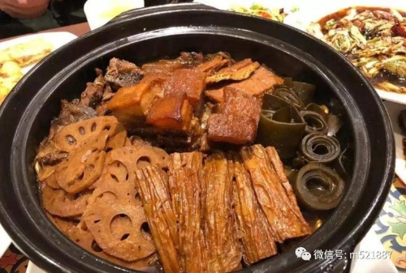

- Jinan suguo
-

Suguo is a popular dish in Jinan and also a traditional dish for Spring Festival celebrations. The dish is braised with elbow bone, pork belly, chicken, fish, lotus root, kelp, tofu, and Chinese cabbage as raw materials.
Recommended shops: Li's Suguo, Meifeijiujia